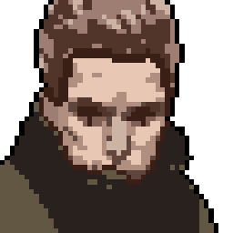

Já foi líder de um pequeno grupo de aventureiros, que com o tempo e as tragédias se desfez. É muito acolhedora, e gostaria de novamente ter amizades.

Milos Sokoloff
Todos ao seu redor são marcados pela dureza do ambiente, mas Milos parece ser ainda mais fechado do que o andarilho comum de sua região. Não gosta muito de falar.
Caterina Golovkin
Jovem, parece atrair boa sorte em suas decisões. Caterina não se lembra de seus cuidadores, mas carrega consigo um pingente que acredita ser deles.